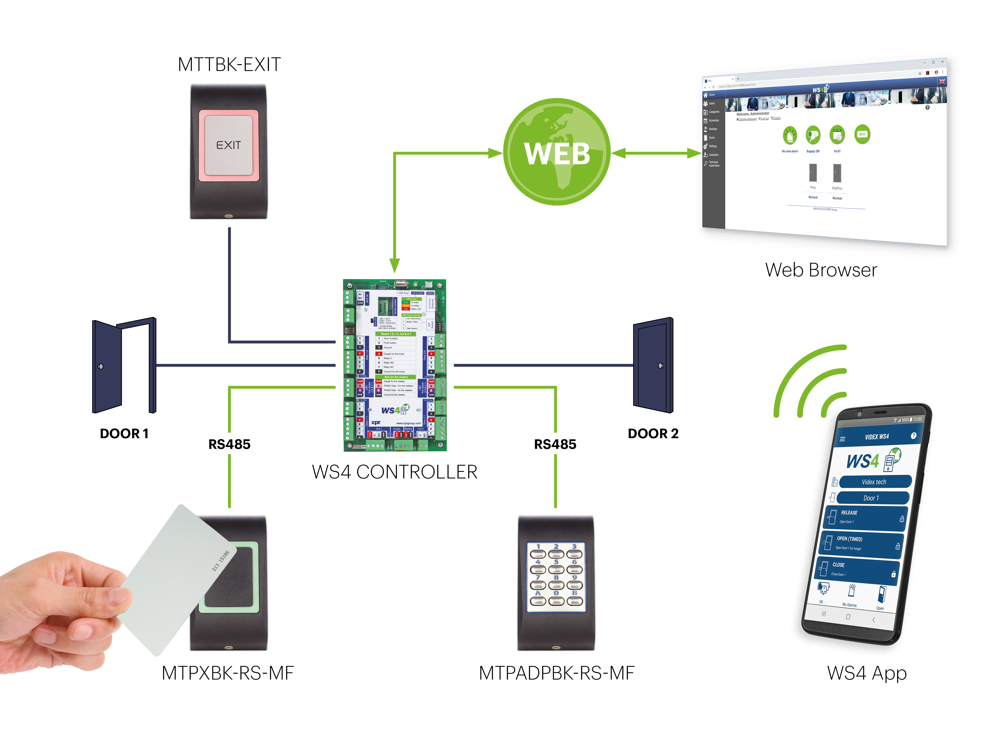

Разработка анонимных веб-приложений в Darknet
Создание веб-приложений для Darknet требует особого внимания к анонимности и безопасности. Разработчик должен учитывать не только защиту от внешних атак, но и конфиденциальность данных и личностей пользователей.
Ключевые аспекты безопасности:
- Шифрование данных: Использование протоколов SSL/TLS, безопасное хранение паролей и чувствительной информации.
- Защита от атак: Фильтрация входных данных, предотвращение SQL-инъекций, XSS и CSRF.
- Анонимность пользователей: Использование Tor, скрытие IP-адресов, минимизация собираемых данных.
- Безопасность хранения: Хэширование паролей, шифрование данных, резервные копии и контроль целостности.
- Мониторинг и контроль доступа: Отслеживание активности, система ролей и ограничений, предотвращение несанкционированного доступа.
